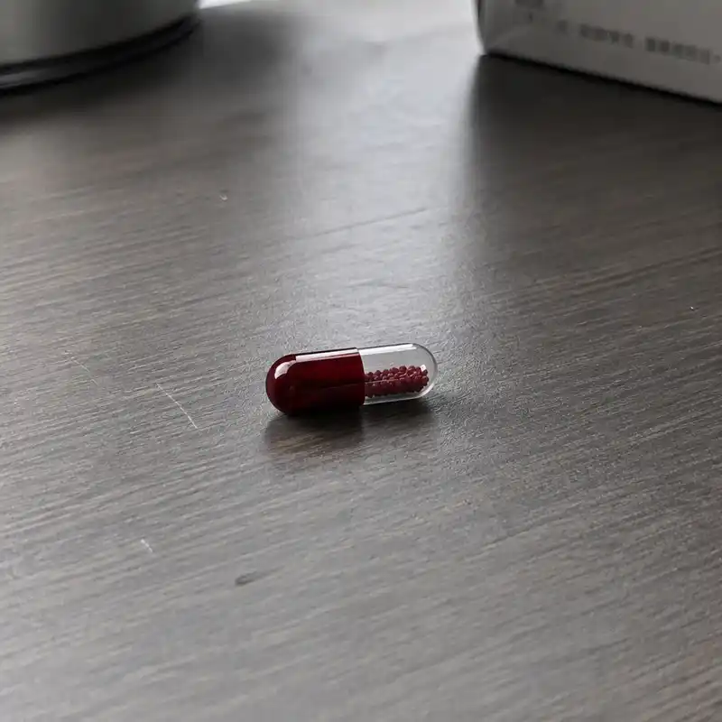

OFO
Organization for Oneirology

盐酸瑞普唑仑胶囊 (Reprozolam Hydrochloride Capsules)
盐酸瑞普唑仑潜意识干预波 (Auditory Subconscious Intervention Wave of Reprozolam Hydrochloride)
红药丸 / Red Pill
实物成分：本品主要成分为γ-氨基丁酸与高纯度化合物R-73（一种试验性高选择性NMDA受体拮抗剂与多巴胺D2受体微调剂的复合缩合物）。辅料：微晶纤维素、硬脂酸镁、交联聚维酮、深红色薄膜包衣预混剂。
线上成分：本品线上成分为以γ-氨基丁酸与高纯度化合物R-73为核心，通过逆向工程合成的特殊音频序列。
实物性状：本品为暗红色硬胶囊，除去包衣后内部粉末显白色或微黄色；气微干涩，味微苦。
线上性状：本品线上表现为红色花形图标加密音频文件，听感上，初始阶段为带有轻微机械底噪的低频白噪音，播放至中段，会偶发极其微弱、类似金属音叉共振的脉冲声；音频整体听感干涩、沉闷，可能引发轻微的颅内压迫感。
用于抑制由异常潜意识活跃引起的频发性深度梦魇、空间与时间认知失调综合征。通过强制抑制相关神经元的活跃度，帮助患者强制切断异常链接，减少做梦频率，回归正常的生活。
10mg/粒。
24-bit/96kHz无损音质，单轨文件容量约为450MB。标准时长：30分钟/轨。
对本品任何成分过敏者、儿童、孕妇禁用。
严禁与其他中枢神经系统抑制剂（如地西泮等苯二氮䓬类药物）、强效致幻剂或酒精合用。
服从性警示：服药期间，患者的大脑防御机制将通过药物人工降级。若在睡前感受到强烈的被注视感或坠落感，属于正常的神经元剥离波动，请勿抗拒，闭眼等待强制休眠。
服药后8小时内，绝对禁止从事驾驶、高空作业及任何需要高度集中注意力的脑力活动。
药片保管：本药物实体化合物对特定频率的光波及电磁辐射极其敏感，必须存放于解梦会配发的特制避光防磁袋中。若发现药片褪色、开裂或表面出现不规则的黑色斑块，请立即交由研发部销毁，严禁吞服。
本品为强效靶向性神经元抑制剂。化合物R-73能精准穿透血脑屏障，通过非竞争性阻断大脑边缘系统异常的高频放电，强行关闭海马体与未知数据流之间的上传与接收通道。通过深度降低特定脑细胞群的活跃度，在大脑皮层构建一道化学防火墙，以此切断宿主与异常梦境源头的物理连接。
研发机构：解梦会理事会-研发部
批准文号：内部受控文件，严禁向非登记成员外泄
实物：口服。儿童不宜服用，成人起始剂量为每日一次，每次1粒（10mg），于睡前30分钟内温水送服。
线上：儿童不宜服用，成人起始剂量为每日一次，每次1轨（30分钟）。
* 注：具体用药频率需严格遵照理事会下发的排期表执行，未经研发部（玖和主任）授权，严禁擅自增减剂量。